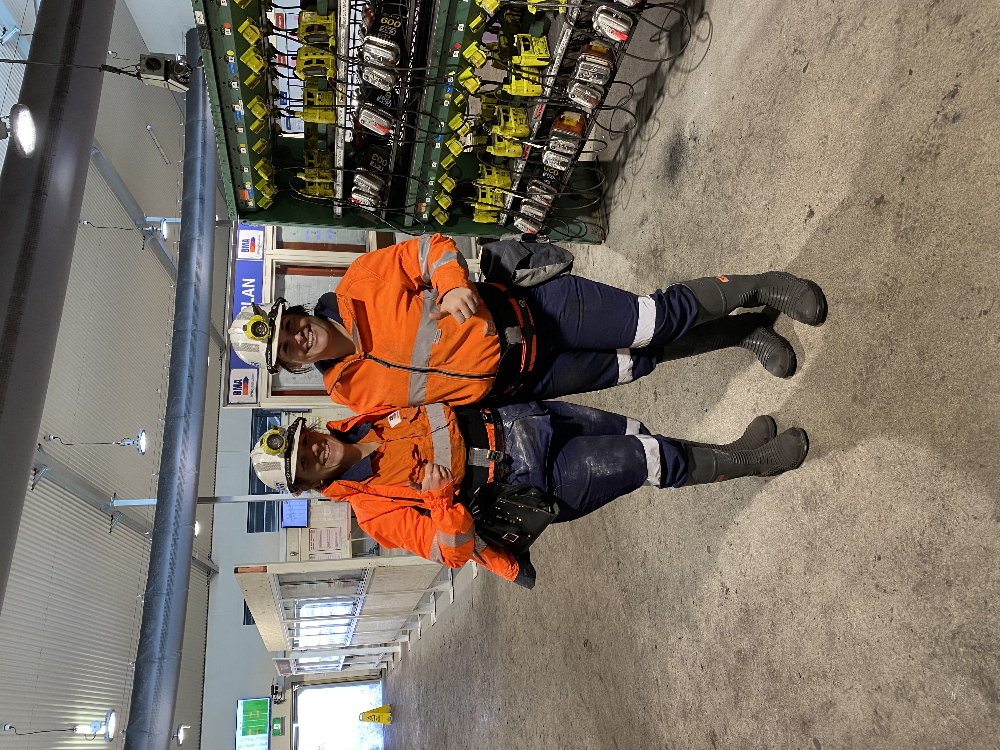

Here are a few of my favourite things
Hi, I'm Bianca, or B.. when I am not coding, you'll find me enjoying some of the finer things in life;
Things I enjoy
I am a self proclaimed green thumb and avid sunset follower. At parties I like to tell people about my lastest plant cutting I've had a new sprout on and bore people with a photo gallery of said plants, sunsets, flowers and any other aesthetically pleasing view I have witnessed recently.
Work

I work in Mining as a reporting and improvement specialist as a part of Engineering, I have been in this role for almost two years happily creating reporting dashboards using spotfire, cleansing data and providing business support.